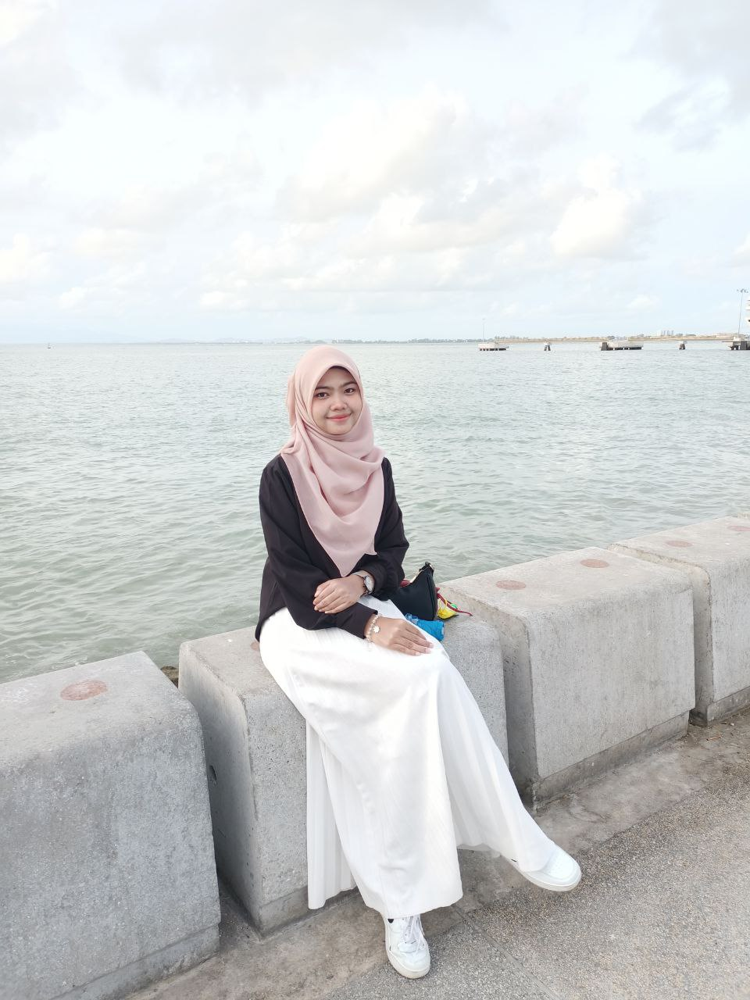

About Me

Biodata
- Name: Norhasima Amira Bt Rizal
- Age: 20 Years Old
- Birth Place: Pulau Pinang
- Birth Date: 20/08/2002
- Address: Sebelah 1254 MK 11 Sungai Batu, Teluk Kumbar 11920, Bayan Lepas Pulau Pinang>
- Nationality: Malaysian
- Religion: Islam
- Primary School: Sekolah Rendah Kebangsaan Sungai Batu
- High School: SMK Seri Bayu
- High Institution: Universiti Teknologi Mara, Kedah
- Language Ability: Malay and English
- Hobby: reading and playing badminton
- Ambition: Lecturer and cafe owner
- Favourite Food: Ayam masak merah and fried rice
- Favourite Drink: Teh ais
- Favourite Places: Macca, Switzerland, England, Korean and Japan
- Favourite Movie: Harry Potter
- Favourite singer: Tulus
- Favourite Quote: "Success is not final, failure is not fatal, It is the courage to continue that counts"